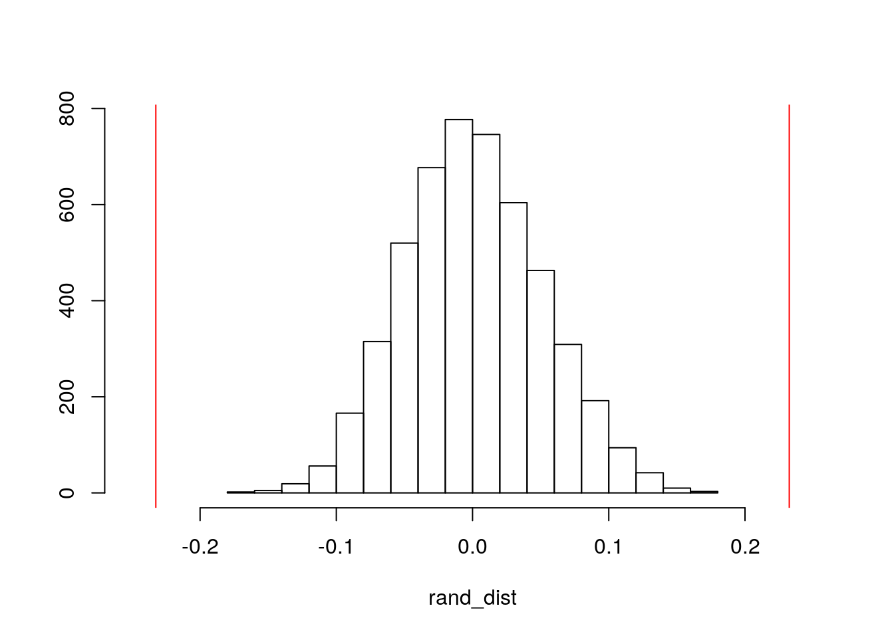

library(tidyverse)## ── Attaching packages ───────────────────────────────────────────── tidyverse 1.3.0 ──## ✓ ggplot2 3.3.2 ✓ purrr 0.3.4
## ✓ tibble 3.0.3 ✓ dplyr 1.0.1
## ✓ tidyr 1.1.1 ✓ stringr 1.4.0
## ✓ readr 1.3.1 ✓ forcats 0.5.0## ── Conflicts ──────────────────────────────────────────────── tidyverse_conflicts() ──
## x dplyr::filter() masks stats::filter()
## x dplyr::lag() masks stats::lag()library(dplyr)
library(interactions)
library(lmtest)## Loading required package: zoo##
## Attaching package: 'zoo'## The following objects are masked from 'package:base':
##
## as.Date, as.Date.numericlibrary(Matrix)##
## Attaching package: 'Matrix'## The following objects are masked from 'package:tidyr':
##
## expand, pack, unpacklibrary(plotROC)
library(sandwich)
library(rstatix)##
## Attaching package: 'rstatix'## The following object is masked from 'package:stats':
##
## filterlibrary(glmnet)## Loaded glmnet 4.0-2Video_Games <- read_csv("Video_Games.csv")## Parsed with column specification:
## cols(
## Name = col_character(),
## Platform = col_character(),
## Year_of_Release = col_character(),
## Genre = col_character(),
## Publisher = col_character(),
## NA_Sales = col_double(),
## EU_Sales = col_double(),
## JP_Sales = col_double(),
## Other_Sales = col_double(),
## Global_Sales = col_double(),
## Critic_Score = col_double(),
## Critic_Count = col_double(),
## User_Score = col_character(),
## User_Count = col_double(),
## Developer = col_character(),
## Rating = col_character()
## )videogames <- Video_Games %>% na.omit() %>% as.data.frame()
videogames$User_Score <- as.numeric(videogames$User_Score)My dataset is a compilation of information regarding video game sales. The dataset, Video_Games, has 16,719 observations. When omitting the NA's, the project works with 6,947 obsrevations. The data has categorical information in columns with the video game's name, platform, year of release, genre, publisher, rating, and developer. The rating represents the minumum age a player is recommended to play the game, ranging from E for everyone, T for teen, M for mature, and other more specific ratings. The data has numeric information regarding sales in North America, Europe, Japan, worldwide, and other countries not in NA, EU, or JP. The sales are in millions. The dataset also gives numerical ratings of the game, with columns of critic score and user score, which are the aggregate scores compiled by Metacritic staff. These scores are scaled on Metacritic's scoring system, with user score ranging from 1-10 and critic score ranging from 1-100 in game greatness. Additonally, there is critic count and user count, which are the number of critics and users used in coming up with the score, respectively.
#Assumptions
group <- videogames$Genre
DVs <- videogames %>% select(NA_Sales, EU_Sales, JP_Sales, Global_Sales, Other_Sales, Critic_Score, Critic_Count, User_Count, User_Score)
sapply(split(DVs,group), mshapiro_test)## Action Adventure Fighting Misc Platform
## statistic 0.09282215 0.4776167 0.4124906 0.4051434 0.3236032
## p.value 1.077487e-66 1.875523e-26 2.311231e-33 5.906894e-34 4.556797e-36
## Puzzle Racing Role-Playing Shooter Simulation
## statistic 0.2714648 0.09362508 0.2954617 0.293423 0.3777955
## p.value 7.026181e-22 3.534848e-46 8.789604e-46 1.647988e-49 8.285139e-31
## Sports Strategy
## statistic 0.2068771 0.4587354
## p.value 4.569976e-53 5.267506e-28#MANOVA testing
man1 <- manova(cbind(NA_Sales, EU_Sales, JP_Sales, Global_Sales,Other_Sales, Critic_Score, Critic_Count, User_Count, User_Score)~Genre, data=videogames)
summary(man1) ## Df Pillai approx F num Df den Df Pr(>F)
## Genre 11 0.21921 15.739 99 62415 < 2.2e-16 ***
## Residuals 6935
## ---
## Signif. codes: 0 '***' 0.001 '**' 0.01 '*' 0.05 '.' 0.1 ' ' 1#Univariate ANOVA
summary.aov(man1) ## Response NA_Sales :
## Df Sum Sq Mean Sq F value Pr(>F)
## Genre 11 82.2 7.4755 8.1839 2.087e-14 ***
## Residuals 6935 6334.6 0.9134
## ---
## Signif. codes: 0 '***' 0.001 '**' 0.01 '*' 0.05 '.' 0.1 ' ' 1
##
## Response EU_Sales :
## Df Sum Sq Mean Sq F value Pr(>F)
## Genre 11 23.9 2.16997 4.6886 3.476e-07 ***
## Residuals 6935 3209.7 0.46282
## ---
## Signif. codes: 0 '***' 0.001 '**' 0.01 '*' 0.05 '.' 0.1 ' ' 1
##
## Response JP_Sales :
## Df Sum Sq Mean Sq F value Pr(>F)
## Genre 11 13.7 1.24572 15.665 < 2.2e-16 ***
## Residuals 6935 551.5 0.07952
## ---
## Signif. codes: 0 '***' 0.001 '**' 0.01 '*' 0.05 '.' 0.1 ' ' 1
##
## Response Global_Sales :
## Df Sum Sq Mean Sq F value Pr(>F)
## Genre 11 219.7 19.9771 5.2955 2.135e-08 ***
## Residuals 6935 26162.2 3.7725
## ---
## Signif. codes: 0 '***' 0.001 '**' 0.01 '*' 0.05 '.' 0.1 ' ' 1
##
## Response Other_Sales :
## Df Sum Sq Mean Sq F value Pr(>F)
## Genre 11 3.47 0.315055 4.4157 1.194e-06 ***
## Residuals 6935 494.80 0.071348
## ---
## Signif. codes: 0 '***' 0.001 '**' 0.01 '*' 0.05 '.' 0.1 ' ' 1
##
## Response Critic_Score :
## Df Sum Sq Mean Sq F value Pr(>F)
## Genre 11 39341 3576.5 19.071 < 2.2e-16 ***
## Residuals 6935 1300557 187.5
## ---
## Signif. codes: 0 '***' 0.001 '**' 0.01 '*' 0.05 '.' 0.1 ' ' 1
##
## Response Critic_Count :
## Df Sum Sq Mean Sq F value Pr(>F)
## Genre 11 131348 11940.7 34.105 < 2.2e-16 ***
## Residuals 6935 2428087 350.1
## ---
## Signif. codes: 0 '***' 0.001 '**' 0.01 '*' 0.05 '.' 0.1 ' ' 1
##
## Response User_Count :
## Df Sum Sq Mean Sq F value Pr(>F)
## Genre 11 100772765 9161160 27.959 < 2.2e-16 ***
## Residuals 6935 2272356550 327665
## ---
## Signif. codes: 0 '***' 0.001 '**' 0.01 '*' 0.05 '.' 0.1 ' ' 1
##
## Response User_Score :
## Df Sum Sq Mean Sq F value Pr(>F)
## Genre 11 233.9 21.2632 10.378 < 2.2e-16 ***
## Residuals 6935 14209.4 2.0489
## ---
## Signif. codes: 0 '***' 0.001 '**' 0.01 '*' 0.05 '.' 0.1 ' ' 1#post-hoc t tests
pairwise.t.test(videogames$NA_Sales, videogames$Genre, p.adj="none")$p.value*604<0.05## Action Adventure Fighting Misc Platform Puzzle Racing
## Adventure FALSE NA NA NA NA NA NA
## Fighting FALSE FALSE NA NA NA NA NA
## Misc TRUE TRUE FALSE NA NA NA NA
## Platform FALSE TRUE FALSE FALSE NA NA NA
## Puzzle FALSE FALSE FALSE FALSE FALSE NA NA
## Racing FALSE FALSE FALSE FALSE FALSE FALSE NA
## Role-Playing FALSE FALSE FALSE TRUE FALSE FALSE FALSE
## Shooter FALSE TRUE FALSE FALSE FALSE FALSE FALSE
## Simulation FALSE FALSE FALSE FALSE FALSE FALSE FALSE
## Sports FALSE TRUE FALSE FALSE FALSE FALSE FALSE
## Strategy FALSE FALSE FALSE TRUE TRUE FALSE FALSE
## Role-Playing Shooter Simulation Sports
## Adventure NA NA NA NA
## Fighting NA NA NA NA
## Misc NA NA NA NA
## Platform NA NA NA NA
## Puzzle NA NA NA NA
## Racing NA NA NA NA
## Role-Playing NA NA NA NA
## Shooter TRUE NA NA NA
## Simulation FALSE FALSE NA NA
## Sports FALSE FALSE FALSE NA
## Strategy FALSE TRUE FALSE TRUEsum(pairwise.t.test(videogames$NA_Sales, videogames$Genre, p.adj="none")$p.value*604<0.05, na.rm=T)## [1] 11pairwise.t.test(videogames$EU_Sales, videogames$Genre, p.adj="none")$p.value*604<0.05## Action Adventure Fighting Misc Platform Puzzle Racing
## Adventure FALSE NA NA NA NA NA NA
## Fighting FALSE FALSE NA NA NA NA NA
## Misc FALSE FALSE FALSE NA NA NA NA
## Platform FALSE FALSE FALSE FALSE NA NA NA
## Puzzle FALSE FALSE FALSE FALSE FALSE NA NA
## Racing FALSE FALSE FALSE FALSE FALSE FALSE NA
## Role-Playing FALSE FALSE FALSE FALSE FALSE FALSE FALSE
## Shooter FALSE TRUE FALSE FALSE FALSE FALSE FALSE
## Simulation FALSE FALSE FALSE FALSE FALSE FALSE FALSE
## Sports FALSE FALSE FALSE FALSE FALSE FALSE FALSE
## Strategy FALSE FALSE FALSE TRUE FALSE FALSE FALSE
## Role-Playing Shooter Simulation Sports
## Adventure NA NA NA NA
## Fighting NA NA NA NA
## Misc NA NA NA NA
## Platform NA NA NA NA
## Puzzle NA NA NA NA
## Racing NA NA NA NA
## Role-Playing NA NA NA NA
## Shooter FALSE NA NA NA
## Simulation FALSE FALSE NA NA
## Sports FALSE FALSE FALSE NA
## Strategy FALSE TRUE FALSE FALSEsum(pairwise.t.test(videogames$EU_Sales, videogames$Genre, p.adj="none")$p.value*604<0.05, na.rm=T)## [1] 3pairwise.t.test(videogames$JP_Sales, videogames$Genre, p.adj="none")$p.value*604<0.05## Action Adventure Fighting Misc Platform Puzzle Racing
## Adventure FALSE NA NA NA NA NA NA
## Fighting FALSE FALSE NA NA NA NA NA
## Misc FALSE FALSE FALSE NA NA NA NA
## Platform FALSE FALSE FALSE FALSE NA NA NA
## Puzzle FALSE FALSE FALSE FALSE FALSE NA NA
## Racing FALSE FALSE FALSE FALSE FALSE FALSE NA
## Role-Playing TRUE TRUE TRUE TRUE FALSE FALSE TRUE
## Shooter FALSE FALSE FALSE FALSE TRUE FALSE FALSE
## Simulation FALSE FALSE FALSE FALSE FALSE FALSE FALSE
## Sports FALSE FALSE FALSE FALSE TRUE FALSE FALSE
## Strategy FALSE FALSE FALSE FALSE TRUE FALSE FALSE
## Role-Playing Shooter Simulation Sports
## Adventure NA NA NA NA
## Fighting NA NA NA NA
## Misc NA NA NA NA
## Platform NA NA NA NA
## Puzzle NA NA NA NA
## Racing NA NA NA NA
## Role-Playing NA NA NA NA
## Shooter TRUE NA NA NA
## Simulation TRUE FALSE NA NA
## Sports TRUE FALSE FALSE NA
## Strategy TRUE FALSE FALSE FALSEsum(pairwise.t.test(videogames$JP_Sales, videogames$Genre, p.adj="none")$p.value*604<0.05, na.rm=T)## [1] 12pairwise.t.test(videogames$Other_Sales, videogames$Genre, p.adj="none")##
## Pairwise comparisons using t tests with pooled SD
##
## data: videogames$Other_Sales and videogames$Genre
##
## Action Adventure Fighting Misc Platform Puzzle Racing
## Adventure 0.00152 - - - - - -
## Fighting 0.11388 0.12225 - - - - -
## Misc 0.30600 0.00075 0.04058 - - - -
## Platform 0.50132 0.02662 0.46096 0.18102 - - -
## Puzzle 0.13709 0.49516 0.62977 0.05762 0.32077 - -
## Racing 0.45848 0.00089 0.05652 0.73687 0.25913 0.07864 -
## Role-Playing 0.00500 0.22007 0.57310 0.00357 0.15516 0.88188 0.00378
## Shooter 0.34452 0.00038 0.03510 0.76667 0.20139 0.06431 0.94192
## Simulation 0.05035 0.27771 0.66957 0.01876 0.26124 0.87160 0.02559
## Sports 0.38718 0.00043 0.03915 0.70837 0.22201 0.06963 0.99223
## Strategy 0.00017 0.73615 0.04971 0.00012 0.00782 0.33565 0.00012
## Role-Playing Shooter Simulation Sports
## Adventure - - - -
## Fighting - - - -
## Misc - - - -
## Platform - - - -
## Puzzle - - - -
## Racing - - - -
## Role-Playing - - - -
## Shooter 0.00105 - - -
## Simulation 0.96752 0.01527 - -
## Sports 0.00114 0.92506 0.01701 -
## Strategy 0.09190 3.9e-05 0.14240 4.3e-05
##
## P value adjustment method: nonesum(pairwise.t.test(videogames$Other_Sales, videogames$Genre, p.adj="none")$p.value*604<0.05, na.rm=T)## [1] 2pairwise.t.test(videogames$Global_Sales, videogames$Genre, p.adj="none")##
## Pairwise comparisons using t tests with pooled SD
##
## data: videogames$Global_Sales and videogames$Genre
##
## Action Adventure Fighting Misc Platform Puzzle Racing
## Adventure 0.00185 - - - - - -
## Fighting 0.47261 0.03588 - - - - -
## Misc 0.00170 1.7e-06 0.00256 - - - -
## Platform 0.07061 0.00011 0.04821 0.28289 - - -
## Puzzle 0.65798 0.12507 0.99286 0.03634 0.17124 - -
## Racing 0.41543 0.00091 0.22446 0.03534 0.34368 0.41875 -
## Role-Playing 0.68664 0.00847 0.71958 0.00199 0.05721 0.80966 0.30465
## Shooter 0.01445 1.3e-05 0.01988 0.22209 0.97460 0.13860 0.23671
## Simulation 0.62223 0.03482 0.89790 0.00693 0.08522 0.91991 0.32386
## Sports 0.06433 5.6e-05 0.05582 0.09110 0.67074 0.22686 0.49229
## Strategy 0.00017 0.69891 0.00970 8.7e-08 9.9e-06 0.06184 1.0e-04
## Role-Playing Shooter Simulation Sports
## Adventure - - - -
## Fighting - - - -
## Misc - - - -
## Platform - - - -
## Puzzle - - - -
## Racing - - - -
## Role-Playing - - - -
## Shooter 0.01707 - - -
## Simulation 0.85158 0.04674 - -
## Sports 0.05952 0.56168 0.10930 -
## Strategy 0.00136 5.2e-07 0.01016 2.9e-06
##
## P value adjustment method: nonesum(pairwise.t.test(videogames$Global_Sales, videogames$Genre, p.adj="none")$p.value*604<0.05, na.rm=T)## [1] 7pairwise.t.test(videogames$User_Count, videogames$Genre, p.adj="none")$p.value*604<0.05## Action Adventure Fighting Misc Platform Puzzle Racing
## Adventure FALSE NA NA NA NA NA NA
## Fighting TRUE FALSE NA NA NA NA NA
## Misc TRUE FALSE FALSE NA NA NA NA
## Platform FALSE FALSE FALSE FALSE NA NA NA
## Puzzle FALSE FALSE FALSE FALSE FALSE NA NA
## Racing TRUE FALSE FALSE FALSE FALSE FALSE NA
## Role-Playing TRUE TRUE TRUE TRUE TRUE TRUE TRUE
## Shooter TRUE TRUE TRUE TRUE TRUE TRUE TRUE
## Simulation FALSE FALSE FALSE FALSE FALSE FALSE FALSE
## Sports TRUE FALSE FALSE FALSE FALSE FALSE FALSE
## Strategy FALSE FALSE FALSE TRUE FALSE FALSE FALSE
## Role-Playing Shooter Simulation Sports
## Adventure NA NA NA NA
## Fighting NA NA NA NA
## Misc NA NA NA NA
## Platform NA NA NA NA
## Puzzle NA NA NA NA
## Racing NA NA NA NA
## Role-Playing NA NA NA NA
## Shooter FALSE NA NA NA
## Simulation TRUE TRUE NA NA
## Sports TRUE TRUE FALSE NA
## Strategy FALSE TRUE FALSE TRUEsum(pairwise.t.test(videogames$User_Count, videogames$Genre, p.adj="none")$p.value*604<0.05, na.rm=T)## [1] 25pairwise.t.test(videogames$User_Score, videogames$Genre, p.adj="none")$p.value*604<0.05## Action Adventure Fighting Misc Platform Puzzle Racing
## Adventure FALSE NA NA NA NA NA NA
## Fighting FALSE FALSE NA NA NA NA NA
## Misc FALSE FALSE TRUE NA NA NA NA
## Platform FALSE FALSE FALSE TRUE NA NA NA
## Puzzle FALSE FALSE FALSE FALSE FALSE NA NA
## Racing FALSE FALSE FALSE FALSE FALSE FALSE NA
## Role-Playing TRUE TRUE FALSE TRUE FALSE FALSE TRUE
## Shooter FALSE FALSE FALSE FALSE FALSE FALSE FALSE
## Simulation FALSE FALSE FALSE FALSE FALSE FALSE FALSE
## Sports FALSE FALSE FALSE FALSE FALSE FALSE FALSE
## Strategy FALSE FALSE FALSE TRUE FALSE FALSE FALSE
## Role-Playing Shooter Simulation Sports
## Adventure NA NA NA NA
## Fighting NA NA NA NA
## Misc NA NA NA NA
## Platform NA NA NA NA
## Puzzle NA NA NA NA
## Racing NA NA NA NA
## Role-Playing NA NA NA NA
## Shooter TRUE NA NA NA
## Simulation TRUE FALSE NA NA
## Sports TRUE FALSE FALSE NA
## Strategy FALSE FALSE FALSE FALSEsum(pairwise.t.test(videogames$User_Score, videogames$Genre, p.adj="none")$p.value*604<0.05, na.rm = T)## [1] 10pairwise.t.test(videogames$Critic_Score, videogames$Genre, p.adj="none")$p.value*604<0.05## Action Adventure Fighting Misc Platform Puzzle Racing
## Adventure FALSE NA NA NA NA NA NA
## Fighting FALSE FALSE NA NA NA NA NA
## Misc FALSE FALSE FALSE NA NA NA NA
## Platform FALSE FALSE FALSE FALSE NA NA NA
## Puzzle FALSE FALSE FALSE FALSE FALSE NA NA
## Racing FALSE FALSE FALSE FALSE FALSE FALSE NA
## Role-Playing TRUE TRUE FALSE TRUE FALSE FALSE TRUE
## Shooter TRUE TRUE FALSE TRUE FALSE FALSE FALSE
## Simulation FALSE FALSE FALSE FALSE FALSE FALSE FALSE
## Sports TRUE TRUE TRUE TRUE TRUE FALSE TRUE
## Strategy TRUE TRUE FALSE TRUE FALSE FALSE FALSE
## Role-Playing Shooter Simulation Sports
## Adventure NA NA NA NA
## Fighting NA NA NA NA
## Misc NA NA NA NA
## Platform NA NA NA NA
## Puzzle NA NA NA NA
## Racing NA NA NA NA
## Role-Playing NA NA NA NA
## Shooter FALSE NA NA NA
## Simulation FALSE FALSE NA NA
## Sports FALSE TRUE TRUE NA
## Strategy FALSE FALSE FALSE FALSEsum(pairwise.t.test(videogames$Critic_Score, videogames$Genre, p.adj="none")$p.value*604<0.05, na.rm=T)## [1] 18pairwise.t.test(videogames$Critic_Count, videogames$Genre, p.adj="none")$p.value*604<0.05## Action Adventure Fighting Misc Platform Puzzle Racing
## Adventure TRUE NA NA NA NA NA NA
## Fighting FALSE FALSE NA NA NA NA NA
## Misc TRUE FALSE FALSE NA NA NA NA
## Platform FALSE FALSE FALSE FALSE NA NA NA
## Puzzle FALSE FALSE FALSE FALSE FALSE NA NA
## Racing TRUE FALSE FALSE FALSE FALSE FALSE NA
## Role-Playing FALSE TRUE FALSE TRUE TRUE FALSE TRUE
## Shooter TRUE TRUE TRUE TRUE TRUE TRUE TRUE
## Simulation TRUE FALSE FALSE FALSE FALSE FALSE FALSE
## Sports TRUE FALSE TRUE FALSE FALSE FALSE FALSE
## Strategy FALSE FALSE FALSE FALSE FALSE FALSE FALSE
## Role-Playing Shooter Simulation Sports
## Adventure NA NA NA NA
## Fighting NA NA NA NA
## Misc NA NA NA NA
## Platform NA NA NA NA
## Puzzle NA NA NA NA
## Racing NA NA NA NA
## Role-Playing NA NA NA NA
## Shooter TRUE NA NA NA
## Simulation TRUE TRUE NA NA
## Sports TRUE TRUE FALSE NA
## Strategy FALSE TRUE FALSE TRUEsum(pairwise.t.test(videogames$Critic_Count, videogames$Genre, p.adj="none")$p.value*604<0.05, na.rm = T)## [1] 24The total number of tests performed is 604. This includes 1 MANOVA, 9 ANOVA's, and 594 post-hoc t tests. The probability of a Type I error is .999, calculated, by doing 1 - 0.95^604. This due to the number of tests performed which is steadily increasing the probability of a Type I error as the number of tests increase. To adjust for the significance level accordingly (Bonferroni Correction), I divided 0.05/604 and got 0.00008278 to use as our significance level. To test MANOVA assumptions to determine validity of the test, I tested multivariate normality of each group in the dataset. The resulting p-values of each group were all below 0.05, therefore the multivariate normality assumption was violated. Because the first assumption tested for was invalid, no further assumptions were necessary to test. We see a very tiny p-value in our MANOVA, which tells us for at least one of the 9 response variables, at least one genre is different. We ran a univariate ANOVA for each group to see if any of the groups are different. All of them were significant, before significance correction, which tells us at least one genre differs for all groups. The t-tests were ran to display all values significance with the adjusted significance level. Looking at the significance level after correction in the pairwise t-tests, we can see that with the minute significance value, the result of having significant differences in the variables is often less than half or a third in almost every t tests by every numeric variable. A distinct trend amongst the lack of significant differences was the trend in Japan's sales in which Role-Playing games were different across the chart. Another distinct trend is in the critic score, in which the Sports genre tends to be different across the chart.
data <- videogames %>% mutate(y=ifelse(Rating=="E",1,0))
data$y <- as.character(data$y)
data %>% group_by(y) %>% summarize(mean(Global_Sales))## `summarise()` ungrouping output (override with `.groups` argument)## # A tibble: 2 x 2
## y `mean(Global_Sales)`
## <chr> <dbl>
## 1 0 0.702
## 2 1 0.935data%>%group_by(y)%>%
summarize(means=mean(Global_Sales))%>%summarize(`mean_diff`=diff(means)) ## `summarise()` ungrouping output (override with `.groups` argument)## # A tibble: 1 x 1
## mean_diff
## <dbl>
## 1 0.232#then scramble data, and look at a histogram of those scrambled mean data
rand_dist<-vector() #create vector to hold diffs under null hypothesis
for(i in 1:5000){
new<-data.frame(Sales=sample(data$Global_Sales),Rating=data$y) #scramble columns
rand_dist[i]<-mean(new[new$Rating=="1",]$Sales)-
mean(new[new$Rating=="0",]$Sales)}
{hist(rand_dist, xlim=c(-0.25, 0.25), main="",ylab=""); abline(v = c(-0.2324915, 0.2324915),col="red")}
mean(rand_dist> 0.2324915 | rand_dist< -0.2324915) ## [1] 0Because I wanted to group a numeric variable, global sales, by a categorical, E vs. other rated games, I calculated the mean difference. The mean difference 0.232, which tells us the E rated games has a global sales on average of .232 more greater than the other games. The null hypothesis is that mean global sales is the same for E rated games vs. Non E rated games. The alternative hypothesis is that mean global sales is different for E rated games vs. Non E rated games. For the randomization test, once the rating no longer had an association with the global sales, we can see the histogram of 5000 mean differences from the scrambled up data. Looking at the true mean difference from our sample, we can see it does not look like a plausible value whatsoever in a world where there is no true association (our null hypothesis). Based on our two-talied test, the probability of getting a sample mean difference past our cutoffs is zero, so we can reject the null hypothesis that there is no association.
videogames2 <- videogames
#Mean-centering predictor variables
videogames2$Critic_Score_c <- videogames2$Critic_Score - mean(videogames2$Critic_Score )
#Linear regression model
fit<-lm(User_Count~Platform*Critic_Score_c, data= videogames2)
summary(fit)##
## Call:
## lm(formula = User_Count ~ Platform * Critic_Score_c, data = videogames2)
##
## Residuals:
## Min 1Q Median 3Q Max
## -1284.9 -92.9 -21.6 15.9 9261.0
##
## Coefficients:
## Estimate Std. Error t value Pr(>|t|)
## (Intercept) 117.9652 41.6177 2.834 0.00460 **
## PlatformDC -161.3762 438.4608 -0.368 0.71285
## PlatformDS -81.8152 48.3040 -1.694 0.09036 .
## PlatformGBA -94.4021 53.1323 -1.777 0.07566 .
## PlatformGC -83.2157 49.7308 -1.673 0.09431 .
## PlatformPC 329.4199 47.3283 6.960 3.71e-12 ***
## PlatformPS -53.5866 59.4172 -0.902 0.36716
## PlatformPS2 -69.9911 44.2626 -1.581 0.11386
## PlatformPS3 97.5658 45.4793 2.145 0.03197 *
## PlatformPS4 360.0496 53.6170 6.715 2.03e-11 ***
## PlatformPSP -83.1589 49.1230 -1.693 0.09053 .
## PlatformPSV -8.5107 62.8195 -0.135 0.89224
## PlatformWii -32.8701 48.5025 -0.678 0.49798
## PlatformWiiU 127.8797 68.4676 1.868 0.06184 .
## PlatformX360 98.6520 45.0976 2.188 0.02874 *
## PlatformXB -95.1274 46.7874 -2.033 0.04207 *
## PlatformXOne 154.9682 59.1918 2.618 0.00886 **
## Critic_Score_c 7.3756 3.3487 2.203 0.02766 *
## PlatformDC:Critic_Score_c 0.1074 24.4741 0.004 0.99650
## PlatformDS:Critic_Score_c -5.7671 3.7548 -1.536 0.12460
## PlatformGBA:Critic_Score_c -6.1484 4.1005 -1.499 0.13381
## PlatformGC:Critic_Score_c -5.2146 3.8935 -1.339 0.18052
## PlatformPC:Critic_Score_c 34.6990 3.7965 9.140 < 2e-16 ***
## PlatformPS:Critic_Score_c -3.7938 4.1841 -0.907 0.36458
## PlatformPS2:Critic_Score_c -4.5100 3.5377 -1.275 0.20241
## PlatformPS3:Critic_Score_c 8.0821 3.5953 2.248 0.02461 *
## PlatformPS4:Critic_Score_c 23.9657 4.3160 5.553 2.92e-08 ***
## PlatformPSP:Critic_Score_c -5.5186 4.0471 -1.364 0.17274
## PlatformPSV:Critic_Score_c -2.8826 5.4722 -0.527 0.59837
## PlatformWii:Critic_Score_c -3.0483 3.6911 -0.826 0.40892
## PlatformWiiU:Critic_Score_c 1.8411 4.9920 0.369 0.71227
## PlatformX360:Critic_Score_c 5.0700 3.5410 1.432 0.15225
## PlatformXB:Critic_Score_c -6.1569 3.6706 -1.677 0.09352 .
## PlatformXOne:Critic_Score_c 5.7104 4.5905 1.244 0.21356
## ---
## Signif. codes: 0 '***' 0.001 '**' 0.01 '*' 0.05 '.' 0.1 ' ' 1
##
## Residual standard error: 512.7 on 6913 degrees of freedom
## Multiple R-squared: 0.2343, Adjusted R-squared: 0.2306
## F-statistic: 64.1 on 33 and 6913 DF, p-value: < 2.2e-16#plot the regression
videogames2 %>%
ggplot(aes(User_Count, Critic_Score_c, fill= Platform, color = Platform)) +
geom_smooth(method = "lm")## `geom_smooth()` using formula 'y ~ x'#linearity
resids<-fit$residuals
fitvals<-fit$fitted.values
data.frame(resids,fitvals)%>%ggplot(aes(fitvals,resids))+geom_point()+geom_hline(yintercept=0) #does not look linear.#homoskedasticity
bptest(fit)##
## studentized Breusch-Pagan test
##
## data: fit
## BP = 376.42, df = 33, p-value < 2.2e-16#normality
ggplot()+geom_histogram(aes(resids, bin=10))## Warning: Ignoring unknown aesthetics: bin## `stat_bin()` using `bins = 30`. Pick better value with `binwidth`.ggplot()+geom_qq(aes(sample=resids))+geom_qq()ks.test(resids, "pnorm", mean=0, sd(resids))## Warning in ks.test(resids, "pnorm", mean = 0, sd(resids)): ties should not be
## present for the Kolmogorov-Smirnov test##
## One-sample Kolmogorov-Smirnov test
##
## data: resids
## D = 0.3011, p-value < 2.2e-16
## alternative hypothesis: two-sided# recompute regression results with robust standard errors
coeftest(fit, vcov = vcovHC(fit))##
## t test of coefficients:
##
## Estimate Std. Error t value Pr(>|t|)
## (Intercept) 117.96515 15.09269 7.8160 6.261e-15 ***
## PlatformDC -161.37621 55.20193 -2.9234 0.0034738 **
## PlatformDS -81.81518 15.40446 -5.3111 1.123e-07 ***
## PlatformGBA -94.40214 15.29542 -6.1719 7.128e-10 ***
## PlatformGC -83.21569 15.73010 -5.2902 1.259e-07 ***
## PlatformPC 329.41992 38.20445 8.6226 < 2.2e-16 ***
## PlatformPS -53.58661 18.15966 -2.9509 0.0031795 **
## PlatformPS2 -69.99115 15.45816 -4.5278 6.061e-06 ***
## PlatformPS3 97.56580 24.35233 4.0064 6.229e-05 ***
## PlatformPS4 360.04960 63.22922 5.6944 1.289e-08 ***
## PlatformPSP -83.15891 15.43285 -5.3884 7.342e-08 ***
## PlatformPSV -8.51068 20.78906 -0.4094 0.6822718
## PlatformWii -32.87014 21.35356 -1.5393 0.1237699
## PlatformWiiU 127.87974 38.03924 3.3618 0.0007786 ***
## PlatformX360 98.65195 24.09826 4.0937 4.293e-05 ***
## PlatformXB -95.12739 15.33519 -6.2032 5.852e-10 ***
## PlatformXOne 154.96821 37.31342 4.1531 3.319e-05 ***
## Critic_Score_c 7.37564 1.62557 4.5373 5.795e-06 ***
## PlatformDC:Critic_Score_c 0.10735 4.04101 0.0266 0.9788064
## PlatformDS:Critic_Score_c -5.76708 1.64565 -3.5044 0.0004605 ***
## PlatformGBA:Critic_Score_c -6.14840 1.64399 -3.7399 0.0001856 ***
## PlatformGC:Critic_Score_c -5.21461 1.73158 -3.0115 0.0026093 **
## PlatformPC:Critic_Score_c 34.69895 5.42782 6.3928 1.735e-10 ***
## PlatformPS:Critic_Score_c -3.79383 1.83577 -2.0666 0.0388073 *
## PlatformPS2:Critic_Score_c -4.51002 1.67352 -2.6949 0.0070572 **
## PlatformPS3:Critic_Score_c 8.08205 2.75876 2.9296 0.0034051 **
## PlatformPS4:Critic_Score_c 23.96565 8.24844 2.9055 0.0036786 **
## PlatformPSP:Critic_Score_c -5.51863 1.67133 -3.3019 0.0009650 ***
## PlatformPSV:Critic_Score_c -2.88259 2.97990 -0.9673 0.3334048
## PlatformWii:Critic_Score_c -3.04829 1.98357 -1.5368 0.1243955
## PlatformWiiU:Critic_Score_c 1.84114 3.38533 0.5439 0.5865561
## PlatformX360:Critic_Score_c 5.06995 2.28747 2.2164 0.0266962 *
## PlatformXB:Critic_Score_c -6.15688 1.66880 -3.6894 0.0002265 ***
## PlatformXOne:Critic_Score_c 5.71035 3.78915 1.5070 0.1318497
## ---
## Signif. codes: 0 '***' 0.001 '**' 0.01 '*' 0.05 '.' 0.1 ' ' 1Highlighting a few of the coefficient estimates, the predicted user count of reviews for 3DS games with an average critic score is 117.96. PC games with an average critic score have a predicted user count of 329.419 higher than 3DS games with an average critic score. Xbox games with an average critic score have a predicted user count of 95.127 lower than 3DS games with an average critic score. The slope of critic score on the user count for PS4 games is 23.965 greater than for 3DS games. The slope of critic score on the user count for PC games is 34.698 greater than for 3DS games.For every 1 unit increase in critic score, predicted user count goes up by 7.37 for 3DS games. The assumptions for the linear regression model were violated across the board. Looking at the plot of resids and fitvals, the eyeballed linearity was not determined to be adequate enough to fit assumptions. Testing for homoskedasticity, the bptest gave a probability of less than 0.05, letting us know we have unequal variance. I used the ks.test to check for normality and this assumption was violated as well. The p-value says we can reject the null hypothesis of normality. The results of the coef test were expected to have greater standard errors due to penalizing our model after not meeting the assumption. Highlighting a few values and looking at the new standard errors, many previous unsignificant variables, such as Platform DC, DS, GBA, and GC, who's values were 41.617, 438.460, 48.30, 53.132, respectively, decreased in standard error and became significant. PC was significant and stayed significant, with a standard error of going from 47.32 to 38.204. Looking a significant interactive effect, PS4 and critic score, seemed to stay significant and increase in standard error as expected, going from 4.31 to 8.24. Critic score stayed significant while also decreasing in standard error. The unexpected decrease may have effects not known to the student. The proportion in the variation in the outcome that our model explains is 0.2343.
fit<-lm(User_Count~Platform*Critic_Score_c,data= videogames2)
boot_dat<-videogames2 %>% sample_frac(replace=TRUE)
samp_distn<-replicate(5000, {
boot_dat<-videogames2 %>% sample_frac(replace=TRUE)
fit<-lm(User_Count~Platform*Critic_Score_c, data=boot_dat)
coef(fit)
})
## Estimated SEs
samp_distn%>%t%>%as.data.frame%>%summarize_all(sd)## (Intercept) PlatformDC PlatformDS PlatformGBA PlatformGC PlatformPC
## 1 14.78561 61.54142 15.04876 15.02177 15.34444 38.09412
## PlatformPS PlatformPS2 PlatformPS3 PlatformPS4 PlatformPSP PlatformPSV
## 1 18.06026 15.17094 24.10765 61.66753 15.1059 20.26177
## PlatformWii PlatformWiiU PlatformX360 PlatformXB PlatformXOne Critic_Score_c
## 1 20.74014 36.82481 24.01664 15.03502 37.71024 1.573024
## PlatformDC:Critic_Score_c PlatformDS:Critic_Score_c
## 1 4.168733 1.593788
## PlatformGBA:Critic_Score_c PlatformGC:Critic_Score_c
## 1 1.593393 1.668357
## PlatformPC:Critic_Score_c PlatformPS:Critic_Score_c
## 1 5.37845 1.821244
## PlatformPS2:Critic_Score_c PlatformPS3:Critic_Score_c
## 1 1.627857 2.709294
## PlatformPS4:Critic_Score_c PlatformPSP:Critic_Score_c
## 1 8.024181 1.607743
## PlatformPSV:Critic_Score_c PlatformWii:Critic_Score_c
## 1 2.830152 1.919637
## PlatformWiiU:Critic_Score_c PlatformX360:Critic_Score_c
## 1 3.276855 2.260361
## PlatformXB:Critic_Score_c PlatformXOne:Critic_Score_c
## 1 1.62172 3.739035samp_distn %>% t %>% as.data.frame %>% pivot_longer(1:34) %>% group_by(name) %>%
summarize(lower=quantile(value,.025), upper=quantile(value,.975))## `summarise()` ungrouping output (override with `.groups` argument)## # A tibble: 34 x 3
## name lower upper
## <chr> <dbl> <dbl>
## 1 (Intercept) 89.5 147.
## 2 Critic_Score_c 4.53 10.6
## 3 PlatformDC -272. -50.7
## 4 PlatformDC:Critic_Score_c -6.55 8.88
## 5 PlatformDS -112. -52.7
## 6 PlatformDS:Critic_Score_c -9.03 -2.85
## 7 PlatformGBA -124. -65.6
## 8 PlatformGBA:Critic_Score_c -9.42 -3.26
## 9 PlatformGC -114. -53.4
## 10 PlatformGC:Critic_Score_c -8.66 -2.10
## # … with 24 more rowsComparaing to the previous observed values, the values for Platform DC and DS increased, while GBA, GC, PC, critic score, and PS4 & critic score standard errors decreased. These values did not shift by more than a 1 unit increase, staying almost consistent. Using the 95% CI from our data, we can do hypothesis tests and ask if 0 is a plausible value. Highlighting some of the data, we can reject the hypothesis that the variable is not significant for variables such as critic score, platform DS, GBA, GC, PC, and the interaction between PS4 & critic score interaction.
data <- videogames %>% mutate(y=ifelse(Rating=="E", 1 ,0))
data$User_Score <- as.numeric(data$User_Score)
#model
fit2<-glm(y~Global_Sales+User_Score, family="binomial", data=data)
coeftest(fit2)##
## z test of coefficients:
##
## Estimate Std. Error z value Pr(>|z|)
## (Intercept) -0.762200 0.131968 -5.7756 7.667e-09 ***
## Global_Sales 0.064851 0.015070 4.3033 1.683e-05 ***
## User_Score -0.015781 0.018118 -0.8710 0.3838
## ---
## Signif. codes: 0 '***' 0.001 '**' 0.01 '*' 0.05 '.' 0.1 ' ' 1exp(coef(fit2))## (Intercept) Global_Sales User_Score
## 0.4666388 1.0669996 0.9843428#ACC, TPR, TNR, PPV, AUC & confusion matrix
probs<-predict(fit2,type="response")
pred<-ifelse(probs>.5,1,0)
table(truth=data$y, prediction=pred)%>%addmargins## prediction
## truth 0 1 Sum
## 0 4819 10 4829
## 1 2105 13 2118
## Sum 6924 23 6947class_diag<-function(probs,truth){
if(is.numeric(truth)==FALSE & is.logical(truth)==FALSE) truth<-as.numeric(truth)-1
tab<-table(factor(probs>.5,levels=c("FALSE","TRUE")),truth)
prediction<-ifelse(probs>.5,1,0)
acc=mean(truth==prediction)
sens=mean(prediction[truth==1]==1)
spec=mean(prediction[truth==0]==0)
ppv=mean(truth[prediction==1]==1)
f1=2*(sens*ppv)/(sens+ppv)
ord<-order(probs, decreasing=TRUE)
probs <- probs[ord]; truth <- truth[ord]
TPR=cumsum(truth)/max(1,sum(truth))
FPR=cumsum(!truth)/max(1,sum(!truth))
dup<-c(probs[-1]>=probs[-length(probs)], FALSE)
TPR<-c(0,TPR[!dup],1); FPR<-c(0,FPR[!dup],1)
n <- length(TPR)
auc<- sum( ((TPR[-1]+TPR[-n])/2) * (FPR[-1]-FPR[-n]) )
data.frame(acc,sens,spec,ppv,auc)
}
class_diag(probs,data$y)## acc sens spec ppv auc
## 1 0.695552 0.006137866 0.9979292 0.5652174 0.5294396#Logit density plot
data$logit<-predict(fit2,type="link")
data%>%ggplot()+geom_density(aes(logit,color=as.factor(y),fill=as.factor(y)), alpha=.4)+
theme(legend.position=c(.85,.85))+geom_vline(xintercept=0)+xlab("logit (log-odds)")+
geom_rug(aes(logit,color=as.factor(y)))#ROC curve and calculating AUC
ROCplot <- ggplot(fit2) + geom_roc(aes(d=y, m=probs), n.cuts=0)
ROCplotcalc_auc(ROCplot)## PANEL group AUC
## 1 1 -1 0.529444With a global sales and user score of zero, the odds of being an E rated game is 0.4666. For every 1 increase in global sales, the odds of being an E rated game is multiplied by 1.067. For every 1 increase in user score, the odds of being an E rated game is multiplied by 0.984. Out of 6,947 games, the classifier predicted 6,924 would be non-E rated games and 23 would be E-rated games. In reality, there are 2,118 E-rated games and 4,829 non-E rated games. Out of 6,947 games, the classifier predicted 6,924 would be non-E rated games and 23 would be E-rated games. In reality, there are 2,118 E-rated games and 4,829 non-E rated games. Overall, the proportion of the model that correctly classified games as E-rated or non-E-rated was 0.695 based on the class diag accuracy output.Out of every game that is actually rated E, the proportion of our model that is flagging those games as rated E is 0.00613, based on our sensitivity value in the class diag output. Out of every game that is actually a non-E-rated game, the proportion of our model that is flagging those games correctly is 0.997, based on our specificity value in the class diag output. Out of all of the values that our matrix is classifying as E-rated games, the proportion of those that are actually E-rated games are 0.565 based on the precision value in our class diag output. The ROC plot does represent a perfect world and shows almost a completely random prediction. The AUC is bad.
potato <- sample_n(videogames, 4000)
sad2 <- potato %>% select(Critic_Count, Critic_Score, User_Count, User_Score, Rating)
gamerr<- sad2 %>% mutate(y=ifelse(Rating=="E", 1 ,0))
gamerr$Rating<-NULL
fit6 <- glm(y~., data=gamerr, family="binomial")## Warning: glm.fit: fitted probabilities numerically 0 or 1 occurredprobs<-predict(fit6,type="response")
class_diag(probs, gamerr$y)## acc sens spec ppv auc
## 1 0.712 0.1374172 0.9606017 0.6014493 0.6977335## k-fold CV
set.seed(1234)
k=10 #choose number of folds
data <-gamerr[sample(nrow(gamerr)),] #randomly order rows
folds<-cut(seq(1:nrow(gamerr)),breaks=k,labels=F) #create folds
diags<-NULL
for(i in 1:k){
## Create training and test sets
train<-data[folds!=i,]
test<-data[folds==i,]
truth<-test$y ## Truth labels for fold i
## Train model on training set (all but fold i)
fit<-glm(y~.,data=train,family="binomial")
## Test model on test set (fold i)
probs<-predict(fit,newdata = test,type="response")
## Get diagnostics for fold i
diags<-rbind(diags,class_diag(probs,truth))
}## Warning: glm.fit: fitted probabilities numerically 0 or 1 occurred
## Warning: glm.fit: fitted probabilities numerically 0 or 1 occurred
## Warning: glm.fit: fitted probabilities numerically 0 or 1 occurred
## Warning: glm.fit: fitted probabilities numerically 0 or 1 occurred
## Warning: glm.fit: fitted probabilities numerically 0 or 1 occurred
## Warning: glm.fit: fitted probabilities numerically 0 or 1 occurred
## Warning: glm.fit: fitted probabilities numerically 0 or 1 occurred
## Warning: glm.fit: fitted probabilities numerically 0 or 1 occurred
## Warning: glm.fit: fitted probabilities numerically 0 or 1 occurredsummarize_all(diags,mean) #average diagnostics across all k folds## acc sens spec ppv auc
## 1 0.71 0.13202 0.9602992 0.5946212 0.6958793#Lasso
y<-as.matrix(gamerr$y) #grab response
x<-model.matrix(y~.,data=gamerr)[,-1]
head(x)## Critic_Count Critic_Score User_Count User_Score
## 1 46 83 203 8.5
## 2 10 70 7 8.6
## 3 33 79 9 6.4
## 4 8 69 10 6.9
## 5 33 64 55 6.5
## 6 34 68 47 7.1cv<-cv.glmnet(x,y,family="binomial")
lasso<-glmnet(x,y,family="binomial",lambda=cv$lambda.1se)
coef(lasso)## 5 x 1 sparse Matrix of class "dgCMatrix"
## s0
## (Intercept) -1.449392945
## Critic_Count -0.025087764
## Critic_Score 0.022217091
## User_Count -0.001294231
## User_Score -0.017731111#cross-validating lasso model
set.seed(1234)
k=10
dva <- gamerr %>% sample_frac #put rows of dataset in random order
folds <- ntile(1:nrow(gamerr),n=10) #create fold labels
diags <-NULL
for(i in 1:k){
train <- dva[folds!=i,] #create training set (all but fold i)
test <- dva[folds==i,] #create test set (just fold i)
truth <- test$y #save truth labels from fold i
fit <- glm(y~Critic_Count + Critic_Score + User_Count,
data=train, family="binomial")
probs <- predict(fit, newdata=test, type="response")
diags<-rbind(diags,class_diag(probs,truth))
}## Warning: glm.fit: fitted probabilities numerically 0 or 1 occurred
## Warning: glm.fit: fitted probabilities numerically 0 or 1 occurred
## Warning: glm.fit: fitted probabilities numerically 0 or 1 occurred
## Warning: glm.fit: fitted probabilities numerically 0 or 1 occurredsummarize_all(diags,mean)## acc sens spec ppv auc
## 1 0.70625 0.1115692 0.9643807 0.5736011 0.6928484The model was calculated at 50% of the original length and with columns of interest in order to preserve Sara's computer processing power from setting on fire.For the in-sample fit model, we can look at the classification diagnostics and have more information about the model. Overall, the proportion of the model that correctly classified games as E-rated or non-E-rated was 0.708, based on the class diag accuracy output. Out of every game that is actually rated E, the proportion of our model that is flagging those games as rated E is 0.126, based on our sensitivity value in the class diag output. Out of every game that is actually a non-E-rated game, the proportion of our model that is flagging those games correctly is 0.961, based on our specificity value in the class diag output. Out of all of the values that our matrix is classifying as E-rated games, the proportion of those that are actually E-rated games are 0.590 based on the precision value in our class diag output. The AUC is 0.694, which tells us this model is poor, almost fair in predicting TPR and FPR! For the average out-of-sample classification diagnostics, the values differed slightly but did not have any improvment. While the values would represent a similar ROC curve and hold the same meaning in interpretation (see above paragraph), the new accuraciy, sensitivity, specificity, and precision of 0.704, 0.122, 0.958, and 0.574, respectively, still are not part of a good model. The decreased AUC of 0.693 also represents a poor, almost fair model, more random than the the in-sample. The LASSO model's finest lambda that meets the best requirements retains the variables Crtic_Count, User_Score, and Critic_Score. Comparing the model's out of sample AUC to that to that of the logistic regressions above, while the AUC decreased by 0.0002 to 0.692, it was not enough to say the cross-validating lasso model made the AUC much less predictable than it already was at, which is a poor, almost fair value, in which we will see most ROC curves let us know predictions will happen almost randomly.